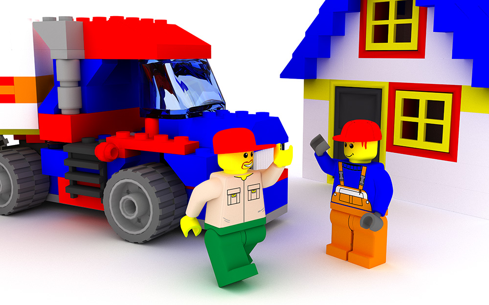

Bricks and Toys (2011)
When I was a boy, I couldn't get enough of these plastic bricks. I used to dream that I had a magical factory that could make as many of them in as many colors as I wanted. Now it seems that the wonders of computer graphics have given me just that. I find that what I enjoy most is shrinking myself down to the size of the tiny figures and inhabiting their world for a moment. I still like the idea of making huge scenes, but it turns out that there's a lot more to good story-telling than simply having the right bricks.
This scene was modeled in Blender and rendered with Yafaray. The faces and torsos were designed in Adobe Illustrator and touched-up using Photoshop on a Lenovo Tablet. This was my first project using Yafaray, and after making this image, I was hooked. The quality is expensive, though. This image took 24 hours to render (extra time for a high-resolution render, to reduce grainyness), compared to less than one second for Trains (2009) using the Blender internal renderer.
© W. Rhett Davis 2011, 2015